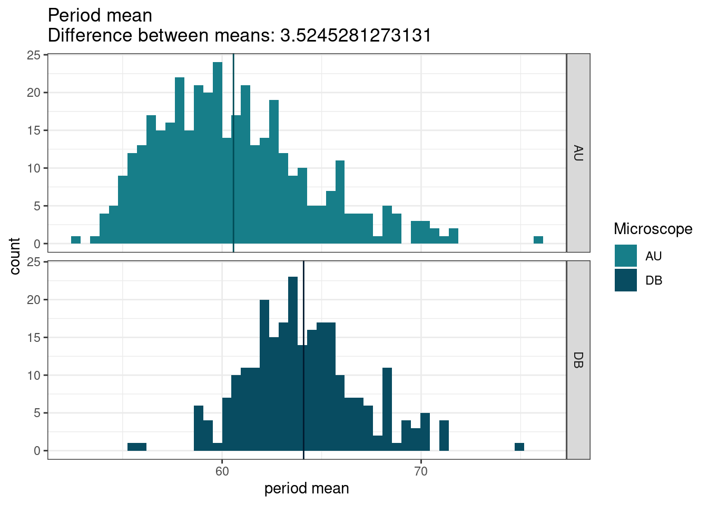
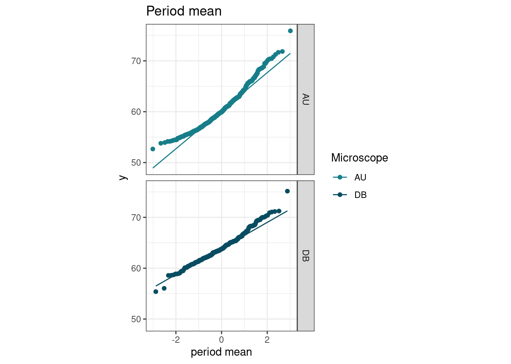
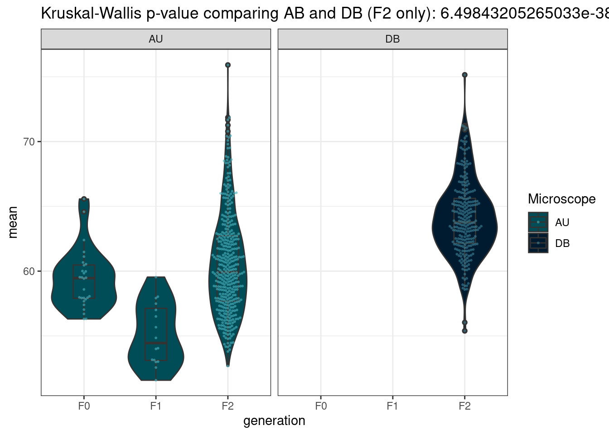
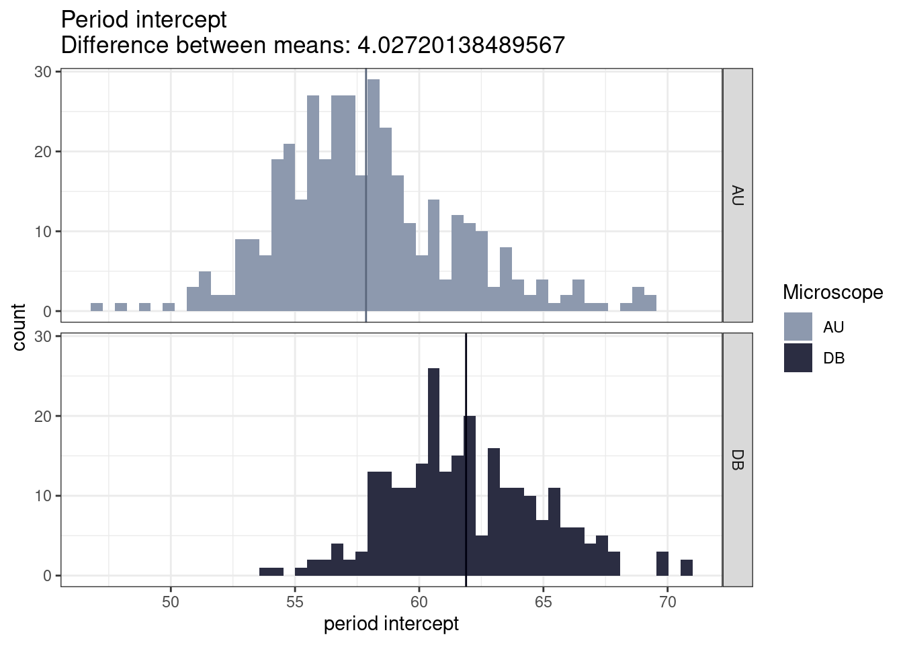
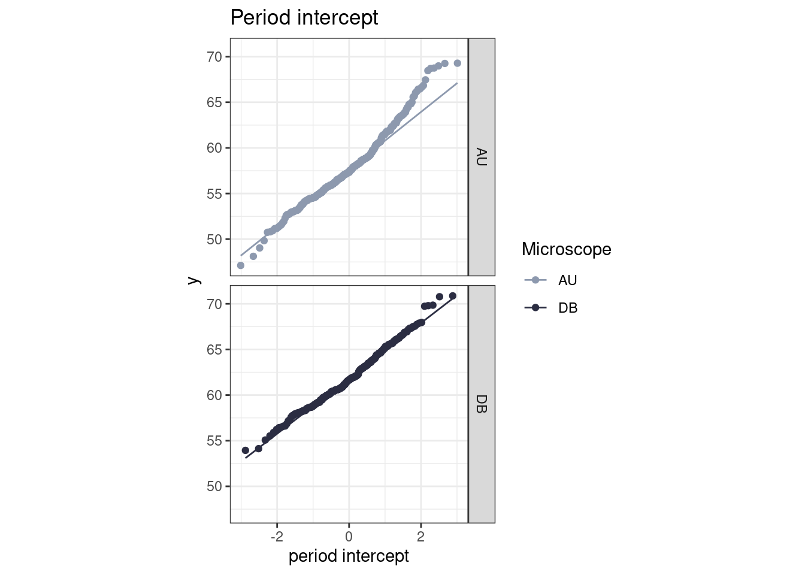
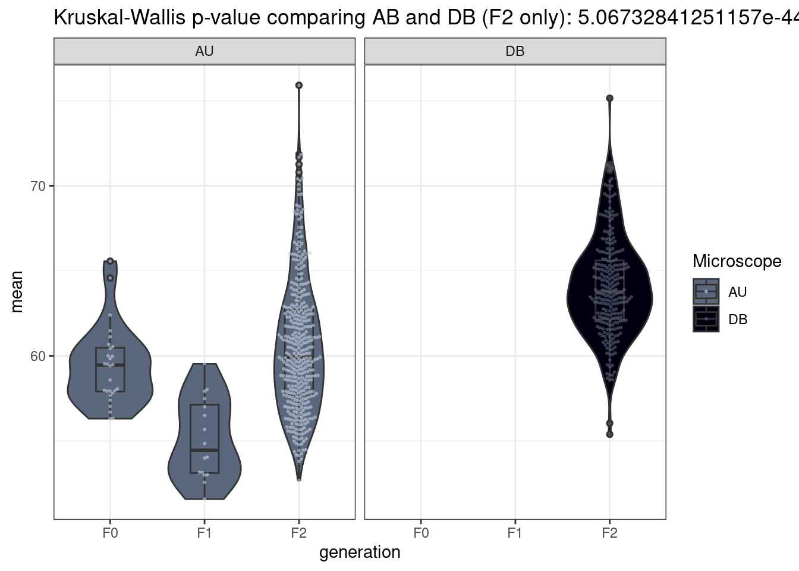
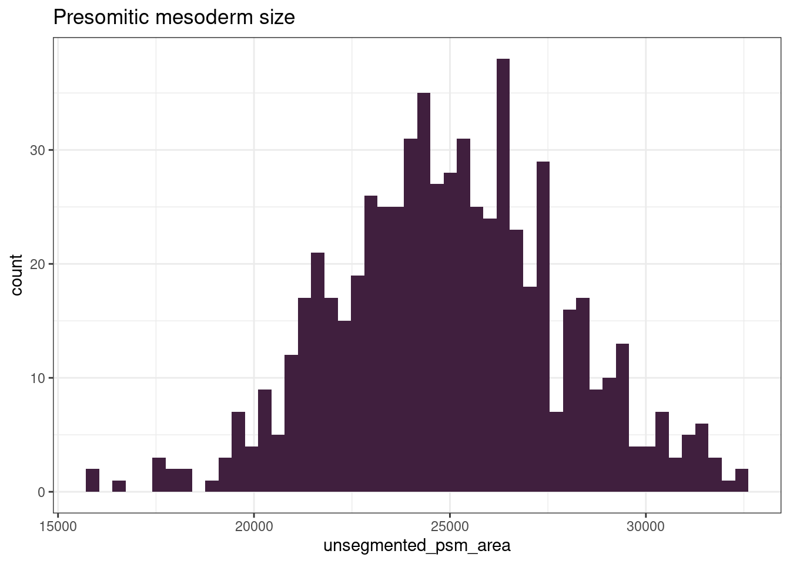
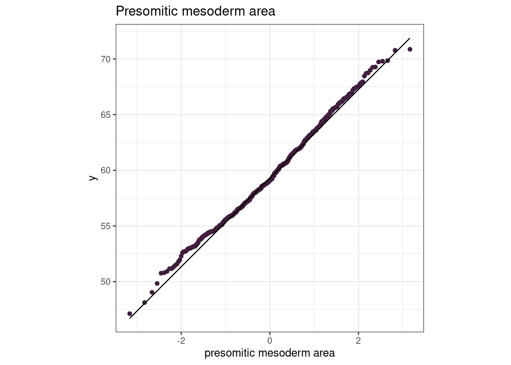

6 Phenotypes
library(tidyverse)
# Get lighter/darker functions
source("https://gist.githubusercontent.com/brettellebi/c5015ee666cdf8d9f7e25fa3c8063c99/raw/91e601f82da6c614b4983d8afc4ef399fa58ed4b/karyoploteR_lighter_darker.R")
# Get palettes for phenotypes
source(here::here("book/source/04-Association_testing.R"))
# Get GWAS code
source(here::here("workflow/scripts/run_gwls_source.R"))
# Adjust palettes
mean_pal = mean_pal[2:3]
intercept_pal = intercept_pal[2:3]
unsegmented_psm_pal = unsegmented_psm_area_pal[2:3]
DATE_OF_ASSOC_TEST = 20220214
PLOT_DIR = here::here("book/plots", DATE_OF_ASSOC_TEST, "phenotypes")
dir.create(PLOT_DIR, recursive = T, showWarnings = F)6.1 Read in phenotype data
pheno_file = here::here("data/20220214_phenotypes.xlsx")
F01_pheno_file = here::here("data/F0_F1_period.xlsx")
# Read in F2 data
df = readxl::read_xlsx(pheno_file) %>%
# remove "KC" from sample name
dplyr::mutate(sample = fish %>%
stringr::str_remove("KC")) %>%
# add `GEN` column
dplyr::mutate(GEN = "F2")
# How many F2 samples?
length(unique(df$sample))
#> [1] 646
# Read in F0 and F1 data
df_f01 = readxl::read_xlsx(F01_pheno_file) %>%
dplyr::mutate(sample = fish) %>%
dplyr::mutate(GEN = dplyr::case_when(str_detect(fish, "^C") ~ "F0",
str_detect(fish, "^K") ~ "F1"))
# Bind two data frames
df_all = dplyr::bind_rows(df_f01, df)6.2 Period
Note that all F0s and F1s were imaged on the AU scope.
DB tends to have a higher temperature than AU, by 0.7°C.
AU has been extensively calibrated, which may cause the differences in the phenotype measurements.
6.2.1 Mean
Difference between means of two microscopes:
micr_mean = df %>%
dplyr::filter(!is.na(Microscope)) %>%
dplyr::group_by(Microscope) %>%
dplyr::summarise(mean_pheno = mean(mean))
micr_mean
#> # A tibble: 2 × 2
#> Microscope mean_pheno
#> <chr> <dbl>
#> 1 AU 60.6
#> 2 DB 64.1
# Difference
diff_mean = abs(micr_mean$mean_pheno[1] - micr_mean$mean_pheno[2])6.2.1.1 Histogram
mean_pal = c("#177e89", "#084c61")
df %>%
# remove NAs in `Microscope` column
dplyr::filter(!is.na(Microscope)) %>%
dplyr::group_by(Microscope) %>%
ggplot() +
geom_histogram(aes(x = mean, fill = Microscope),
bins = 50) +
scale_fill_manual(values = mean_pal) +
geom_vline(data=micr_mean, aes(xintercept=mean_pheno), colour = darker(mean_pal, amount = 50)) +
#stat_summary(fun=mean, geom="line") +
facet_grid(rows = vars(Microscope)) +
theme_bw() +
xlab("period mean") +
ggtitle(paste("Period mean\n", "Difference between means: ", diff_mean, sep = ""))
# Make output directory and save
OUT_DIR = here::here(PLOT_DIR, "mean")
dir.create(OUT_DIR, recursive = T, showWarnings = F)
ggsave(file.path(OUT_DIR, paste("histogram", ".png", sep = "")),
device = "png",
width = 9.6,
height = 6,
units = "in",
dpi = 400)
6.2.1.2 Q-Q plot
df %>%
# remove NAs in `Microscope` column
dplyr::filter(!is.na(Microscope)) %>%
ggplot() +
stat_qq(aes(sample = mean, colour = Microscope)) +
stat_qq_line(aes(sample = mean, colour = Microscope)) +
scale_colour_manual(values = c("#177e89", "#084c61")) +
facet_grid(rows = vars(Microscope)) +
theme_bw() +
xlab("period mean") +
ggtitle("Period mean") +
theme(aspect.ratio=1)
# Make output directory and save
OUT_DIR = here::here(PLOT_DIR, "mean")
dir.create(OUT_DIR, recursive = T, showWarnings = F)
ggsave(file.path(OUT_DIR, paste("qqplot", ".png", sep = "")),
device = "png",
width = 9.6,
height = 6,
units = "in",
dpi = 400)
6.2.1.3 Boxplot
Kruskal-Wallis test
mean_kw = kruskal.test(list(df_all %>%
dplyr::filter(Microscope == "AU") %>%
dplyr::pull(mean),
df_all %>%
dplyr::filter(Microscope == "DB") %>%
dplyr::pull(mean)))
mean_kw$p.value
#> [1] 6.498432e-38
df_all %>%
# remove NAs
dplyr::filter(!is.na(Microscope)) %>%
ggplot(aes(GEN, mean, fill = Microscope)) +
geom_violin() +
geom_boxplot(width = 0.3) +
ggbeeswarm::geom_beeswarm(aes(GEN, mean, colour = Microscope), size = 0.4, alpha = 0.5) +
facet_grid(cols = vars(Microscope)) +
scale_colour_manual(values = lighter(c("#177e89", "#084c61"), amount = 50)) +
scale_fill_manual(values = darker(c("#177e89", "#084c61"), amount = 50)) +
theme_bw() +
xlab("generation") +
ggtitle(paste("Kruskal-Wallis p-value comparing AB and DB (F2 only):", mean_kw$p.value))
6.3 Intercept
Difference between means of two microscopes:
micr_intercept = df %>%
dplyr::filter(!is.na(Microscope)) %>%
dplyr::group_by(Microscope) %>%
dplyr::summarise(mean_pheno = mean(intercept))
micr_intercept
#> # A tibble: 2 × 2
#> Microscope mean_pheno
#> <chr> <dbl>
#> 1 AU 57.9
#> 2 DB 61.9
# Difference
diff_intercept = abs(micr_intercept$mean_pheno[1] - micr_intercept$mean_pheno[2])6.3.0.1 Histogram
intercept_pal = c("#8D99AE", "#2b2d42")
df %>%
# remove NAs in `Microscope` column
dplyr::filter(!is.na(Microscope)) %>%
ggplot() +
geom_histogram(aes(intercept, fill = Microscope),
bins = 50) +
geom_vline(data=micr_intercept, aes(xintercept=mean_pheno), colour = darker(intercept_pal, amount = 50)) +
scale_fill_manual(values = intercept_pal) +
facet_grid(rows = vars(Microscope)) +
xlab("period intercept") +
theme_bw() +
ggtitle(paste("Period intercept\n", "Difference between means: ", diff_intercept, sep = ""))
# Make output directory and save
OUT_DIR = here::here(PLOT_DIR, "intercept")
dir.create(OUT_DIR, recursive = T, showWarnings = F)
ggsave(file.path(OUT_DIR, paste("histogram", ".png", sep = "")),
device = "png",
width = 9.6,
height = 6,
units = "in",
dpi = 400)
6.3.0.2 Q-Q plot
df %>%
# remove NAs in `Microscope` column
dplyr::filter(!is.na(Microscope)) %>%
ggplot() +
stat_qq(aes(sample = intercept, colour = Microscope)) +
stat_qq_line(aes(sample = intercept, colour = Microscope)) +
scale_colour_manual(values = c("#8D99AE", "#2b2d42")) +
facet_grid(rows = vars(Microscope)) +
theme_bw() +
xlab("period intercept") +
ggtitle("Period intercept") +
theme(aspect.ratio=1)
# Make output directory and save
OUT_DIR = here::here(PLOT_DIR, "intercept")
dir.create(OUT_DIR, recursive = T, showWarnings = F)
ggsave(file.path(OUT_DIR, paste("qqplot", ".png", sep = "")),
device = "png",
width = 9.6,
height = 6,
units = "in",
dpi = 400)6.3.0.3 Boxplot
Kruskal-Wallis test
intercept_kw = kruskal.test(list(df_all %>%
dplyr::filter(Microscope == "AU") %>%
dplyr::pull(intercept),
df_all %>%
dplyr::filter(Microscope == "DB") %>%
dplyr::pull(intercept)))
intercept_kw$p.value
#> [1] 5.067328e-44
df_all %>%
# remove NAs
dplyr::filter(!is.na(Microscope)) %>%
ggplot(aes(GEN, mean, fill = Microscope)) +
geom_violin() +
geom_boxplot(width = 0.3) +
ggbeeswarm::geom_beeswarm(aes(GEN, mean, colour = Microscope), size = 0.4, alpha = 0.5) +
facet_grid(cols = vars(Microscope)) +
scale_colour_manual(values = lighter(c("#8D99AE", "#2b2d42"), amount = 50)) +
scale_fill_manual(values = darker(c("#8D99AE", "#2b2d42"), amount = 50)) +
theme_bw() +
xlab("generation") +
ggtitle(paste("Kruskal-Wallis p-value comparing AB and DB (F2 only):", intercept_kw$p.value))
6.4 Presomitic mesoderm size
6.4.1 Histogram
df %>%
ggplot() +
geom_histogram(aes(unsegmented_psm_area),
fill = "#401f3e",
bins = 50) +
theme_bw() +
ggtitle("Presomitic mesoderm size")
#> Warning: Removed 14 rows containing non-finite values
#> (stat_bin).
# Make output directory and save
OUT_DIR = here::here(PLOT_DIR, "unsegmented_psm_area")
dir.create(OUT_DIR, recursive = T, showWarnings = F)
ggsave(file.path(OUT_DIR, paste("histogram", ".png", sep = "")),
device = "png",
width = 9.6,
height = 6,
units = "in",
dpi = 400)
#> Warning: Removed 14 rows containing non-finite values
#> (stat_bin).6.4.2 Q-Q plot
df %>%
ggplot(aes(sample = intercept)) +
stat_qq(colour = "#401f3e") +
stat_qq_line(colour = darker("#401f3e")) +
theme_bw() +
xlab("presomitic mesoderm area") +
ggtitle("Presomitic mesoderm area") +
theme(aspect.ratio=1)
#> Warning: Removed 8 rows containing non-finite values
#> (stat_qq).
#> Warning: Removed 8 rows containing non-finite values
#> (stat_qq_line).
# Make output directory and save
OUT_DIR = here::here(PLOT_DIR, "unsegmented_psm_area")
dir.create(OUT_DIR, recursive = T, showWarnings = F)
ggsave(file.path(OUT_DIR, paste("qqplot", ".png", sep = "")),
device = "png",
width = 9.6,
height = 6,
units = "in",
dpi = 400)
#> Warning: Removed 8 rows containing non-finite values (stat_qq).
#> Warning: Removed 8 rows containing non-finite values
#> (stat_qq_line).